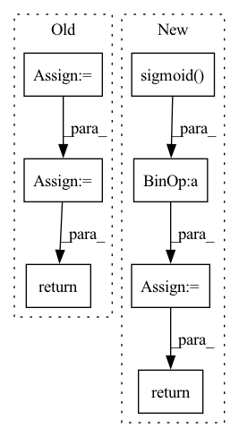

Pattern ID :30845
Before Change
// v_sem_h = self.__dropout(v_sem_h, .8, "v_sem_h")
// v_syn_h = self.__dropout(v_syn_h, .8, "v_syn_h")
sem_syn_h = self.__dropout(sem_syn_h, .8, "sem_syn_h")
h = torch.cat((h, sem_syn_h), dim=1)
return torch.relu(self.merge4(h))
// v_sem_h = (torch.relu(self.v_sem_fc(v_sem_h)) * v_syn_h) + (beta1 * v_sem_h)
// v_syn_h = (torch.relu(self.v_syn_fc(v_syn_h)) * v_sem_h) + ((1-beta1) * v_syn_h)After Change
def __adaptive_merge(self, rnn_h, v_attn, v_sem_h, v_syn_h, sem_syn_h):
h = torch.cat((rnn_h, v_attn), dim=1)
beta1 = torch.sigmoid( self.merge1(h))
beta2 = torch.sigmoid(self.merge2(h))
aa1 = beta1 * v_sem_h + (1 - beta1) * v_syn_h
return beta2 * aa1 + (1 - beta2) * sem_syn_h
def forward_fn(self, v_pool, s_pool, pos_emb, enc_hidden, v_feats, captions, teacher_forcing_ratio=0.5):
// Determine whether it is an inferred mode based on whether it is passed into captionIn pattern: SUPERPATTERN
Frequency: 3
Non-data size: 7
Instances Fragment ID: 90804651
Project Name: jssprz/visual_syntactic_embedding_video_captioning
Commit Name: 08bb3aae9ddc9fd1d5affa73c3fd11db7cad6bd5
Time: 2021-03-05
Author: jperezmartin90@gmail.com
File Name: model/decoder.py
M Class Name: SemSynCNDecoder
N Class Name: SemSynCNDecoder
M Method Name: __adaptive_merge(6)
N Method Name: __adaptive_merge(6)
M Parent Class: nn.Module
N Parent Class: nn.Module
M File Name: model/decoder.py
N File Name: model/decoder.py
M Start Line: 349
M End Line: 360
N Start Line: 420
N End Line: 424
Before Change
super().__init__()
def forward(self, x):
return x
class Teacher(nn.Module):
def __init__(After Change
gru_input = torch.cat((proprio, latent_extero), dim = -1)
next_hiddens = []
for gru_cell, prev_hidden in zip(self.gru_cells, hiddens):
gru_input = gru_cell(gru_input, prev_hidden)
next_hiddens.append(gru_input)
gru_output = gru_input
// attention gating of exteroception
attention_gate = self.to_extero_attn_gate(gru_output)
gated_extero = latent_extero * attention_gate.sigmoid()
// belief state and add gated exteroception
belief_state = self.belief_state_encoder(gru_output)
belief_state = sum_with_zeropad(belief_state, gated_extero)
// to action logits
action_logits = self.to_action_logits(belief_state)
return action_logits, next_hiddens
class Teacher(nn.Module):
def __init__( Fragment ID: 90804569
Project Name: lucidrains/anymal-belief-state-encoder-decoder-pytorch
Commit Name: 31d37d8d81db1d32cbfae83f1e43a669e4c8d5ea
Time: 2022-04-17
Author: lucidrains@gmail.com
File Name: anymal_belief_state_encoder_decoder_pytorch/networks.py
M Class Name: Student
N Class Name: Student
M Method Name: forward(4)
N Method Name: forward(2)
M Parent Class: nn.Module
N Parent Class: nn.Module
M File Name: anymal_belief_state_encoder_decoder_pytorch/networks.py
N File Name: anymal_belief_state_encoder_decoder_pytorch/networks.py
M Start Line: 74
M End Line: 75
N Start Line: 119
N End Line: 157
Before Change
nn.Linear(dim * mult, dim))
def forward(self, x):
return self.net(x)
class PreNorm(nn.Module):
def __init__(self, norm_class, dim, fn):After Change
def forward(self, x):
if not self.glu:
x = self.w1(x)
x = self.act(x)
else:
x, v = self.w1(x).chunk(2, dim=-1)
x = self.act(x) * F.sigmoid( v)
x = self.dropout(x)
x = self.w2(x)
return x
class PreNorm(nn.Module):
def __init__(self, norm_class, dim, fn): Fragment ID: 90804574
Project Name: lucidrains/sinkhorn-transformer
Commit Name: 3e638458d4bc5c6df8037e1b4f460bfa044288e8
Time: 2020-04-09
Author: lucidrains@gmail.com
File Name: sinkhorn_transformer/sinkhorn_transformer.py
M Class Name: FeedForward
N Class Name: FeedForward
M Method Name: forward(2)
N Method Name: forward(2)
M Parent Class: nn.Module
N Parent Class: nn.Module
M File Name: sinkhorn_transformer/sinkhorn_transformer.py
N File Name: sinkhorn_transformer/sinkhorn_transformer.py
M Start Line: 122
M End Line: 122
N Start Line: 122
N End Line: 131